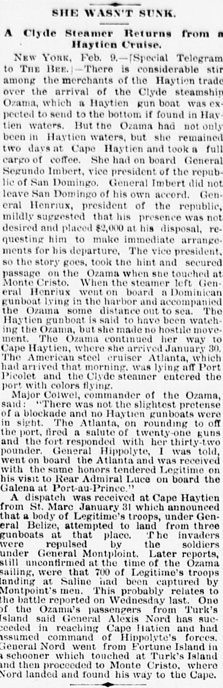

When the steamer left Gen- ITU Hcnriux went on board nCuando el vapor partió, el general Heureaux subió a bordo
Omaha Daily Bee. Omaha [Neb.], February 10, 1889. Page 6. Published by Edward Rosewater, -1922. A daily newspaper.Omaha Daily Bee. Omaha [Neb.], 10 de febrero de 1889. Página 6. Publicado por Edward Rosewater, -1922. Periódico diario. View the originalVer el original

The Omaha Daily Bee reported on the movements of the steamer Ozama and the American steel cruiser Atlanta, noting that an Ozama passenger stated there was no blockade and no Haytian gunboats were in sight. The newspaper also detailed a visit by General Hippolyte to the Atlanta, where he was received with honors. Additionally, a dispatch from St. Marc on January 31 stated that General Legitime's troops attempted to land from three gunboats but were repulsed by General Montploint's soldiers.El Omaha Daily Bee reseñó las travesías del vapor Ozama y del crucero acorazado estadounidense Atlanta, anotando que un pasajero del Ozama atestiguó que no existía bloqueo naval ni se avistaban cañoneros haitianos. Detalló igualmente el rotativo la visita del general Hyppolite al Atlanta, donde fue acogido con salvas y honores militares. Un despacho fechado el 31 de enero en Saint-Marc participó asimismo que tropas del general Légitime intentaron desembarcar desde tres cañoneros, siendo rechazadas por los soldados del general Montplaisir.
FULL TEXT:TEXTO COMPLETO:
Omaha Daily Bee February 10, 188910 de febrero de 1889
SHE WASN'T SUNK.NO FUE HUNDIDA.
A Clyde Steamer Returns from a Haytien Cruise.Un vapor de la Clyde regresa de un crucero haitiano.
NEW YORK, Feb. 9.—[Special Telegram to THE BEE.]—There is considerable stir among the merchants of the Haytien trade over the arrival of the Clyde steamship Ozama, which a Haytien gun boat was expected to send to the bottom, if found in Haytien waters. But the Ozama had not only been in Haytien waters, but she remained two days at Cape Haytien and took a full cargo of coffee. She had on board General Segundo Imbert, vice president of the republic of San Domingo. General Imbert did not leave San Domingo of his own accord. General Henriux, president of the republic, mildly suggested that his presence was not desired and placed $2,000 at his disposal, requesting him to make immediate arrangements for his departure. The vice president, so the story goes, took the hint and secured passage on the Ozama when she touched at Monte Cristo. When the steamer left General Henriux went on board a Dominican gunboat lying in the harbor and accompanied the Ozama some distance out to sea. The Haytien gunboat is said to have been watching the Ozama, but she made no hostile movement. The Ozama continued her way to Cape Haytien, where she arrived January 30. The American steel cruiser Atlanta, which had arrived that morning, was lying off Port Picolet and the Clyde steamer entered the port with colors flying.NUEVA YORK, 9 de febrero.—[Telegrama especial a THE BEE.]—Hay considerable agitación entre los comerciantes del comercio haitiano por la llegada del vapor Ozama de la Clyde, que se esperaba que un cañonero haitiano enviara al fondo, si se encontraba en aguas haitianas. Pero el Ozama no solo había estado en aguas haitianas, sino que permaneció dos días en Cabo Haitiano y tomó una carga completa de café. Tenía a bordo al general Segundo Imbert, vicepresidente de la república de Santo Domingo. El general Imbert no dejó Santo Domingo por su propia voluntad. El general Henriux, presidente de la república, sugirió suavemente que su presencia no era deseada y puso $2,000 a su disposición, pidiéndole que hiciera arreglos inmediatos para su partida. El vicepresidente, según va la historia, captó la indirecta y aseguró pasaje en el Ozama cuando tocó en Monte Cristo. Cuando el vapor salió el general Henriux fue a bordo de un cañonero dominicano anclado en el puerto y acompañó al Ozama alguna distancia mar afuera. Se dice que el cañonero haitiano estaba vigilando al Ozama, pero no hizo movimiento hostil alguno. El Ozama continuó su camino a Cabo Haitiano, donde llegó el 30 de enero. El crucero de acero estadounidense Atlanta, que había llegado esa mañana, estaba anclado frente a Port Picolet y el vapor de la Clyde entró en el puerto con los colores enarbolados.
Major Colwel, commander of the Ozama, said: "There was not the slightest pretense of a blockade and no Haytien gunboats were in sight. The Atlanta, on rounding to off the port, fired a salute of twenty-one guns and the fort responded with her thirty-two pounder. General Hippolyte, I was told, went on board the Atlanta and was received with the same honors tendered Legitime on his visit to Rear Admiral Luce on board the Galena at Port-au-Prince."El mayor Colwel, comandante del Ozama, dijo: «No hubo la menor pretensión de un bloqueo y ningún cañonero haitiano estaba a la vista. El Atlanta, al virar frente al puerto, disparó un saludo de veintiún cañones y el fuerte respondió con su cañón de treinta y dos libras. El general Hippolyte, me dijeron, fue a bordo del Atlanta y fue recibido con los mismos honores rendidos a Legitime en su visita al Contralmirante Luce a bordo del Galena en Puerto Príncipe.»
A dispatch was received at Cape Haytien from St. Marc January 31 which announced that a body of Legitime's troops, under General Belize, attempted to land from three gunboats at that place. The invaders were repulsed by the soldiers under General Montploint. Later reports, still unconfirmed at the time of the Ozama sailing, were that 700 of Legitime's troops landing at Saline had been captured by Montploint's men. This probably relates to the battle reported on Wednesday last. One of the Ozama's passengers from Turk's Island said General Alexis Nord has succeeded in reaching Cape Haytien and had assumed command of Hippolyte's forces. General Nord went from Fortune Island in a schooner which touched at Turk's Island and then proceeded to Monte Cristo, where Nord landed and found his way to the Cape.Un despacho fue recibido en Cabo Haitiano desde St. Marc el 31 de enero que anunció que un cuerpo de tropas de Legitime, bajo el general Belize, intentó desembarcar desde tres cañoneros en ese lugar. Los invasores fueron repelidos por los soldados bajo el general Montploint. Informes posteriores, todavía sin confirmar al momento de zarpar el Ozama, eran que 700 de las tropas de Legitime que desembarcaban en Saline habían sido capturados por los hombres de Montploint. Esto probablemente se relaciona con la batalla reportada el miércoles pasado. Uno de los pasajeros del Ozama desde la Isla Turca dijo que el general Alexis Nord ha logrado llegar a Cabo Haitiano y había asumido el mando de las fuerzas de Hippolyte. El general Nord fue desde la Isla Fortune en una goleta que tocó en la Isla Turca y entonces procedió a Monte Cristo, donde Nord desembarcó y encontró su camino al Cabo.